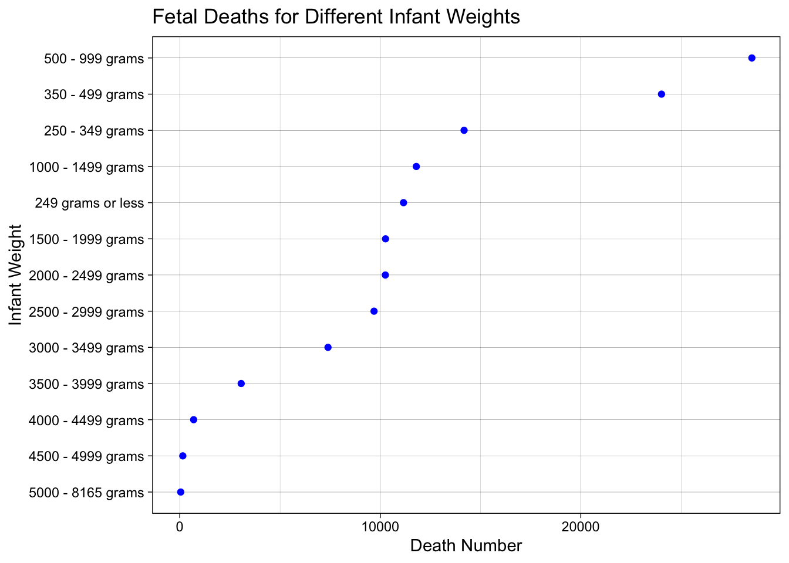
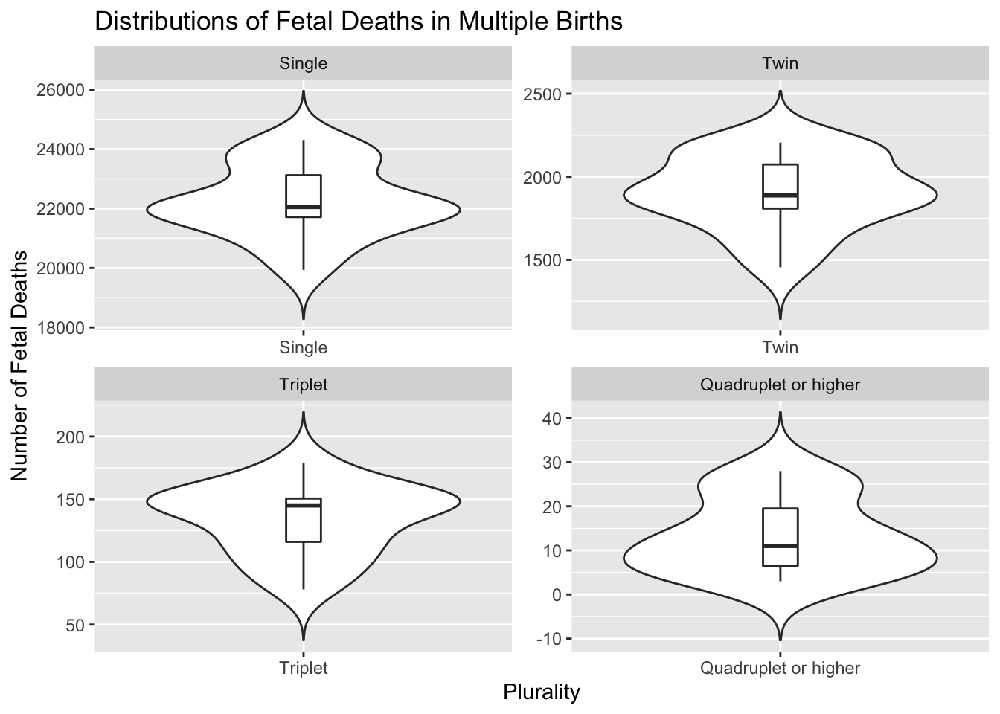
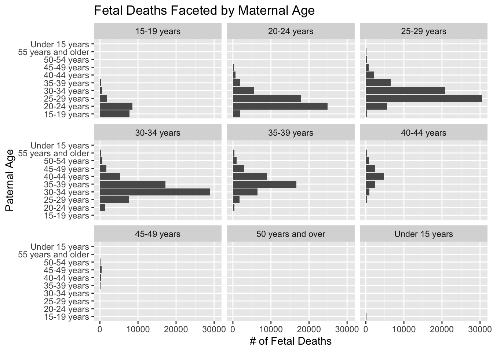
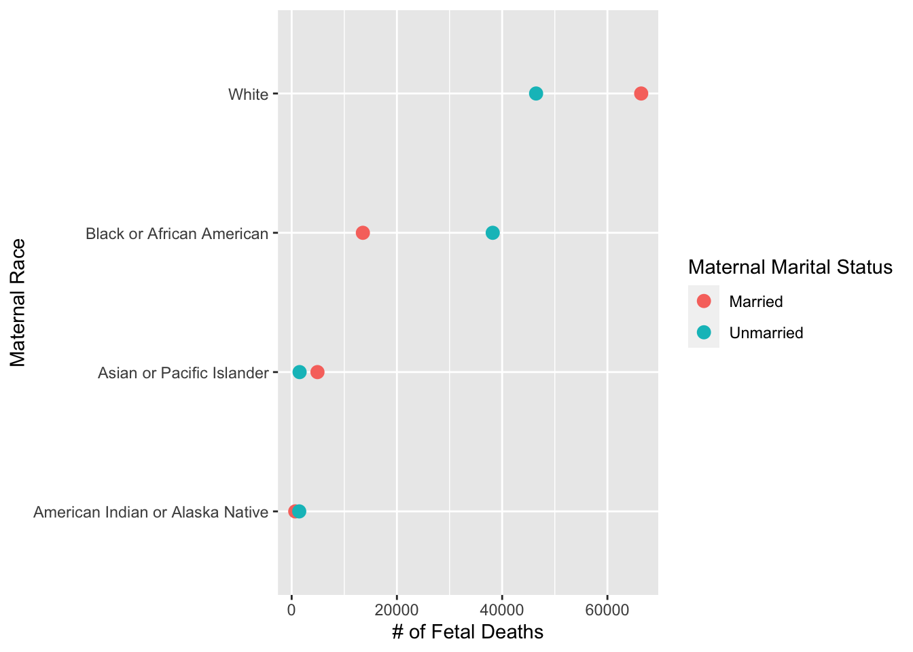

Chapter 5 Results
5.1 Fetal Deaths Over Years

First of all, let us take a look at how the fetal death numbers changed between 2005 and 2019. We can clearly see a decreasing trend since 2007 (hover mouse to the point to see the exact number). After further checking the movement by splitting the data into different genders, we found out that from 2007 to 2008, the female fetal death numbers had a sharper decrease, but male fetal death numbers had an increase. We should notice that boys’ birth rates are always higher than girls’ birth rates, and therefore, it is reasonable to see more dead male fetuses than dead female fetuses.
5.2 Geographical Distribution

From the graph above, we can clearly see the distribution of fetal deaths in each US state. We found that CA, TX, FL, GA, PA, NY, and IL accounted for the largest numbers of total fetal deaths in the United States. The states with the highest number of fetal deaths are mostly along the coast. However, some northern states (ex. MT, ND, ME, VT…) have very low numbers of fetal deaths, and we think perhaps this was because of the low birth rates or small populations in these states.
5.3 Fetal Characteristics
5.3.1 Infant Delivery Weights

According to the World Health Organization (WHO), the average weight at birth for a full-term baby boy is 3,300 grams (g). The average full-term baby girl weighs 3,200g at birth. The average baby born at 37 to 40 weeks weighs between 2,500 to 4,000 grams. Birth weights less than 2,500 grams will be considered low birth weights.
The figure above shows that fetuses with a birth weight of 500-999 grams and fetuses with a birth weight of 350-499 grams died the most. The number of deaths of fetuses with birth weights in these two ranges was much higher than for any other birth weight. Not only that, but we can also see that the top numbers of deaths of fetuses were under 2500 grams of birth weight. So we can conclude that underweight fetuses have a higher mortality rate. However, the data shows that the number of fetal deaths outside the average range of fetal weight is low.
5.3.2 Plurality of Birth

In this part, we analyze whether the plurality of birth affects the number of fetal death. The above plot is a violin plot. The violin plot effectively shows not only median, range, and variability, but also data distribution and its probability density. From the chart above, we can see that single births have the widest distribution of fetal deaths and the highest number of fetal deaths. This is not surprising, as in most cases, there is only one infant from a single pregnancy. Just as we expected, we can see the number of dead fetuses decrease with more births in one pregnancy, as fewer pregnancies have multiple births.
By checking the boxplots in the violin plots, we notice that the distributions of all four groups are not normal. It is worth noting that only Triplet has a right-skewed distribution, and single birth has the most left-skewed distribution.
5.3.3 Infant Delivery Method

Based on the number of dead fetuses, we would like to understand the relationship between the different delivery methods and the number of fetuses per birth. Above is a mosaic plot, and we can see an association between the delivery method and the plurality of birth. As we can see, more single births were vaginally delivered, but as the number of birth in a pregnancy increases, cesarean delivery is more likely to opt.
5.3.4 Gestational Age

We believe that another factor determining whether a fetus will survive in good health is the mother’s gestational age. So we plotted the number of dead fetuses at different gestational ages. In the bar chart above, we can see that the highest number of fetal deaths occurred at the gestational age of 20-23 weeks, and the odds of surviving fetuses were higher for gestational age over 40 weeks. The data provided by the World Health Organization can also verify our results. According to the data provided by the World Health Organization, we know that delivery within 28 weeks requires modern medical technology. Otherwise, the survival rate of the fetus is very low or is zero.
5.4 Maternal/Paternal Characteristics
5.4.1 Parents’ Ages

We believe that fetal death is also related to some parental characteristics, for instance, the age of the mother and the age of the father. So we plotted the number of fetal deaths caused by different maternal ages and paternal ages. We found that when the mother’s age and the father’s age are both between 25 and 29, the number of fetal deaths is the highest. Another age group with a high number of fetal deaths was that both mothers and fathers were between 30 and 34 years old.
5.4.2 Materanl Races and Materanl Marital Status

In this section, we aim to investigate the effect of the mother’s race and the mother’s marital status on the number of fetal deaths. We plotted the two independent variables, the mother’s race, and the mother’s marriage. In the Cleveland plot above, we can see that white mothers had the highest number of fetal deaths, and American Indian or Alaska Native mothers had the lowest number of fetal deaths. For whites and Asians or Pacific Islanders, the numbers of fetal deaths were higher for married mothers than for unmarried mothers. The other two groups had more deaths when their mothers were unmarried.